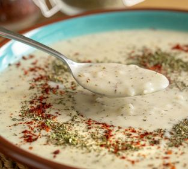

ÇORBALAR
Mercimek Çorbası(Zamansız Çorba)
Malzemeler
<> 1 adet soğan
<> 2 adet küçük boy havuç
<>1 adet büyük boy patates
<>2 su bardağı kırmızı mercimek
<>1 tatlı kaşığı tuz
<>½ tatlı kaşığı karabiber
<>2 yemek kaşığı tereyağ
<>1 yemek kaşığı domates salçası
<>2 yemek kaşığı zeytinyağı
<>2 litre su
Üzerindekiler
<> 2 yemek kaşığı tereyağı
<> 1 tatlı kaşığı kırmızı toz biber
Yapılışı
⚫Mercimeği bol suyla yıkayın ve süzgeçte fazla suyunu süzdürün.
⚫Derin bir tencereye tereyağı ve zeytinyağını alın.
⚫Soğanı yarım ay şeklinde doğrayıp tencereye ilave edin ve kavurmaya başlayın.
⚫Soğanlar pembeleşince domates salçasını ekleyip 2-3 dakika daha kavurun.
⚫Ardından halkalar halinde doğradığınız havuçları ve küp şeklinde doğradığınız patatesi tencereye ilave edin.
⚫Bütün sebzeleri birkaç dakika daha çevirdikten sonra mercimeği tencereye ekleyin ve suyunu ilave edin.
⚫Tuz, karabiber ayarını yaptığınız çorbanızı orta ateşte sebzeler yumuşayıncaya kadar pişirin ve el blenderinden pürüzsüz bir kıvam alıncaya kadar geçirin.
⚫Üzeri için; tereyağını tavada eritin ve toz biber ekleyip 1 dakika sonra ocaktan alı.
⚫Kaselere aldığınız çorbayı hazırladığınız tereyağlı sos ile sıcak olarak servis edin.
Sarımsaklı Un Çorbası

Malzemeler
<> 2 yemek kaşığı tereyağı
<>1 yemek kaşığı zeytinyağı
<>5 yemek kaşığı un
<>6 su bardağı sıcak su
<>1 çay kaşığıtuz
<>1 çay kaşığı karabiber
<>1 diş sarımsak
Üzerindekiler
<>1 yemek kaşığı tereyağı
<>1 tatlı kaşığı toz kırmızı biber
Yapılışı
⚫Tereyağı ve zeytinyağını tencereye alarak ısıtın.
⚫Tereyağı eridikten sonra unu üzerine ekleyin ve çırpıcıyla karıştırarak hafifçe kavurun.
⚫Bir yandan çırpıcı ile tenceredeki unu karıştırarak, bir yandan üzerine sıcak suyu ekleyin.
⚫Çorba kaynamaya başladığında tuz ve karabiberini ekleyin.
⚫İnce ince kıyıp ezdiğiniz sarımsakları da ekleyerek güzelce karıştırın ve altını kapatın.
⚫Başka bir tavada tereyağını hafitçe kızdırın ve toz kırmızı biberi ekleyin. Çorbanın üstüne dökerek servis edin, afiyet olsun!
Ezogelin Çorbası
Malzemeler
<>4 yemek kaşığı pirinç
<>2 su bardağı yoğurt
<>1 çay bardağı süzme yoğurt
<>1,5 yemek kaşığı un
<>3,5 su bardağı su
<>1 yemek kaşığı kuru nane
<>1 çay kaşığıtuz
Yapılışı
⚫Suyu ve pirinci bir tencerenin içerisine alın. Pirinçler yumuşayana kadar güzelce kaynatın.
⚫Ayrı bir kabın içerisine yoğurt, süzme yoğurt ve unu güzelce çırpın.
⚫Ardından ocakta kaynamakta olan sudan 1 kepçe kadar alın. Yoğurdunuzun içerisine azar azar ilave edin. Bir yandan da çırpın.
⚫Hazırladığınız yoğurtlu karışımı ocakta kaynayan pirinçlerin üzerine incecik bir ip şeklinde çok yavaş bir şekilde aktarın.
⚫Diğer yandan da çırpmaya devam edin. Tuz ve nanesini de ilave edin.
⚫Kıvamı çok yoğun olursa su ekleyin. Birkaç dakika daha kaynatın. Dilediğiniz kıvamda olunca ocaktan alın ve sıcak sıcak servis edin. Afiyetler olsun!
Yayla Çorbası

Malzemeler
<>4 çorba kaşığı pirinç
<>1 su bardağı yoğurt
<>7 su bardağı su
<>1 adet yumurta
<>1 çorba kaşığı un
<>2 çay kaşığı tuz
Üzeri İçin
<>3 çorba kaşığı tereyağı ya da margarin
<>2 çay kaşığı pul biber
<>2 çay kaşığı kuru nane
Yapılışı
⚫Bir tencereye su konur ve pirinçler ilave edilerek pişmeye bırakılır.
⚫Bir kâsede yumurta, un ve yoğurt iyice çırpılarak hazırlanır.
⚫Kaynayan pirincin suyundan bu karışıma azar azar ilave edilerek karıştırılır.
⚫Sonra bu karışım pişen pirincin içesine azar azar eklenir ve karıştırılmaya devam edilerek kaynayana kadar pişirilir.
⚫Son olarak tuz ilave edilir.
⚫Tavada tereyağı, nane ve pul biber hafif kavrulur ve tencereye boşaltılır.
⚫Bir taşım kaynadıktan sonra servise hazırdır. Afiyet olsun!